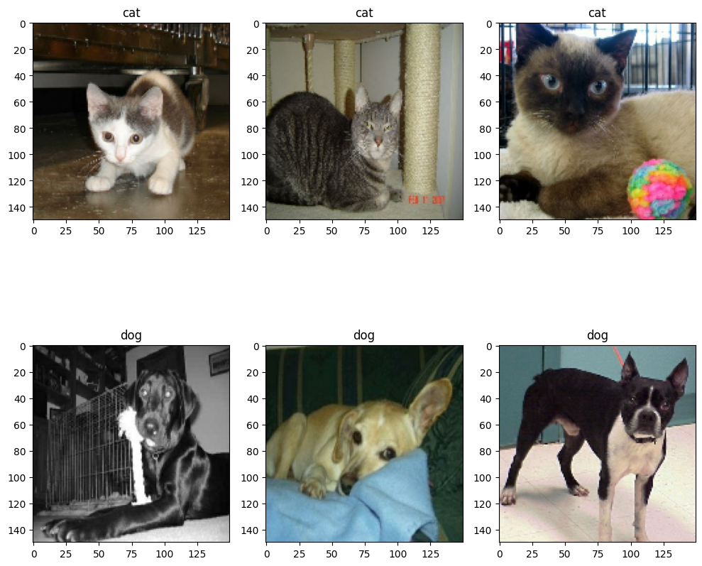
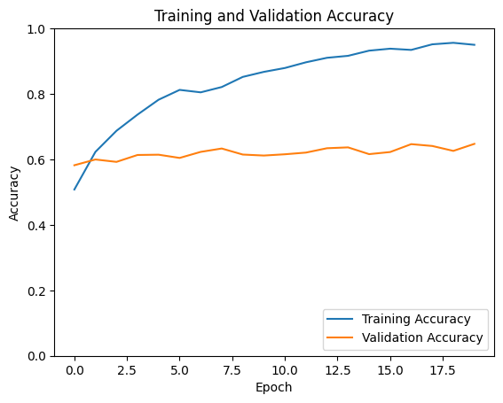
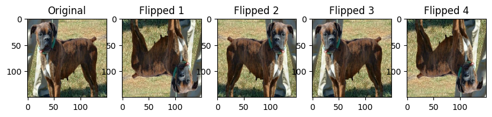
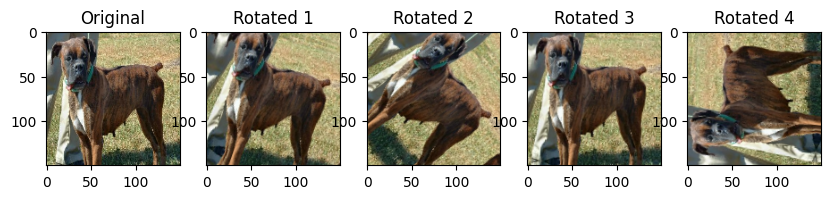
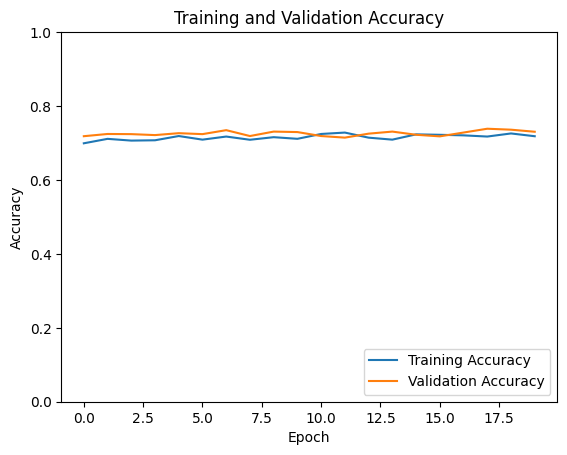
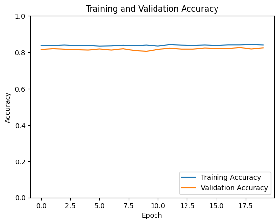
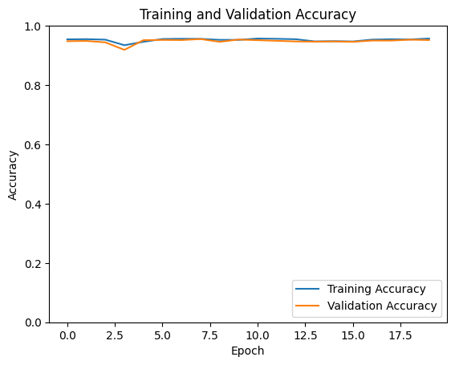

import os # 'os' allows interaction wth the operation system
os.environ["KERAS_BACKEND"] = "torch"
from keras import utils # 'utils' contains utilities for data processing and sequence propocessing
import tensorflow_datasets as tfds # TFDS library is a collection of dataset to use with TensorFlow
import matplotlib.pyplot as plt # 'pyplot' in 'matplotlib' library creates data visualization
import numpy as np # 'numpy' supports mathematical operations
from random import randint # 'randit' generates randome integers with a specified range
import keras # 'keras' supports deep neural networks experimentation
from keras import layers # 'layers' is building blocks of networks in Keras, contains functions like 'Dense', 'Conv2D', etc.Tutorial 5: Image Classification in Keras through Tensorflow Datasets
This blog tutorial will present different approaches to conduct image classification in Keras with data fed through Tensorflow Datasets.
Background Knowledge:
· Keras: Keras 3 functions as an independent library capable of interfacing with various computational backends, including TensorFlow, PyTorch, and JAX, offering flexibility in choosing the underlying framework for deep learning projects.
· TensorFlow Datasets: This feature offers a streamlined approach to managing datasets for training, validation, and testing purposes, enhancing the efficiency of data handling in machine learning workflows.
· Data augmentation: Through data augmentation, we can generate additional variations of our dataset, enhancing the model’s ability to learn and generalize from diverse patterns more effectively.
· Transfer learning: Transfer learning uses the knowledge gained from previously trained models to tackle new, related problems, saving time and computational resources during model development.
Instructions:
1.Load Packages and Obtain Data
We firstly include a block that includes all import statements with a brief introduction of their implications:
By utilizing Kaggle, we gain access to a dataset featuring labeled images of cats and dogs. By executing the code below, we successfully establish datasets designated for training, validation, and testing purposes.
train_ds, validation_ds, test_ds = tfds.load(
"cats_vs_dogs",
# 40% for training, 10% for validation, and 10% for test (the rest unused)
split=["train[:40%]", "train[40%:50%]", "train[50%:60%]"],
as_supervised=True, # Include labels
)
print(f"Number of training samples: {train_ds.cardinality()}")
print(f"Number of validation samples: {validation_ds.cardinality()}")
print(f"Number of test samples: {test_ds.cardinality()}")Number of training samples: 9305
Number of validation samples: 2326
Number of test samples: 2326We use the following code to resize all different sized images in datasets to a fixed size of 150x150
resize_fn = keras.layers.Resizing(150, 150)
train_ds = train_ds.map(lambda x, y: (resize_fn(x), y))
validation_ds = validation_ds.map(lambda x, y: (resize_fn(x), y))
test_ds = test_ds.map(lambda x, y: (resize_fn(x), y))The next block uses batch_size to determine “how many data points are gathered from the directory”:
from tensorflow import data as tf_data
batch_size = 64
train_ds = train_ds.batch(batch_size).prefetch(tf_data.AUTOTUNE).cache()
validation_ds = validation_ds.batch(batch_size).prefetch(tf_data.AUTOTUNE).cache()
test_ds = test_ds.batch(batch_size).prefetch(tf_data.AUTOTUNE).cache()We now write a function to create two-row visualization with one row of cats and one row of dogs
class_names = ['cat', 'dog']
def visualize(ds):
plt.figure(figsize=(10, 10)) #figure size
for images, labels in ds.take(1): # Take one batch at this step
cat_count = 0
dog_count = 0
while cat_count < 3 or dog_count < 3:
i = randint(0, 63) # We before set batch size to 64
if cat_count < 3 and labels[i] == 0: # If we need more cats and found one
ax = plt.subplot(2, 3, cat_count + 1) # plot the cat image
plt.imshow(images[i].numpy().astype("uint8")) # show the image
plt.title(class_names[labels[i]]) # set the title of images
cat_count += 1 # increment the cat counter
elif dog_count < 3 and labels[i] == 1: # If we need more dogs and found one
ax = plt.subplot(2, 3, dog_count + 4)
plt.imshow(images[i].numpy().astype("uint8"))
plt.title(class_names[labels[i]])
dog_count += 1
if cat_count == 3 and dog_count == 3:
break # Exit once 3 cats and 3 dogs have been displayed
plt.tight_layout() # adjust layout
plt.show()
visualize(train_ds)# Update the function call
The following code will create an iterator called labels_iterator:
labels_iterator= train_ds.unbatch().map(lambda image, label: label).as_numpy_iterator()We will compute the number of image in the training set with label 0 (“cat”) and label 1 (“dog”). In the baseline machine learning model, we will examine how accurate it works in our case. Baseline model will be our benchmark for improvement.
labels_iterator = train_ds.unbatch().map(lambda image, label: label).as_numpy_iterator()
# Initialize counters for each label
label_0_cat = 0
label_1_dog = 0
for label in labels_iterator: # iterate through the labels_iterator to count labels
if label == 0:
label_0_cat += 1 # add counts
elif label == 1:
label_1_dog += 1
print(f"Number of 'cat' images (label 0): {label_0_cat}")
print(f"Number of 'dog' images (label 1): {label_1_dog}")Number of 'cat' images (label 0): 4637
Number of 'dog' images (label 1): 46684668 > 4637, the baseline accuracy is calculated by “the most frequent label”/ “total label”; In this case, it is calculated by dog/(dog+cat)
print("The baseline accuracy is", label_1_dog/(label_1_dog+label_0_cat))The baseline accuracy is 0.50166577109081132. Model 1
“The simplest way to make a model is by using the keras.models.Sequential API, which allows you to construct a model by simply passing a list of layers.”
Let’s start to construct model 1 (a keras.Sequential model) using at least two Conv2D layers, at least two MaxPooling2D layers, at least one Flatten layer, at least one Dense layer, and at least one Dropout layer.
import tensorflow as tf
from tensorflow.keras import layers, models
"""
Conv2D layer: creates convolution kernal, produces a tensor of outputs
MaxPooling 2D layer: reduces the dimensionality of the featured maps
Flatten layer: Converts 2D feature maps into 1D feature vector
Dropout layer: reduces overfitting by dropping a portion of the input
Dense layer: performs classification based on processed previous layers
ReLu: applied element-wise, directly output positive numbers, if negative, output zero,
"""
model1 = keras.models.Sequential([
# define shape:
layers.Input((150,150,3)), #the shape indicates the model input images 150 pixesl in height, 150 pixels in width, 3 channels (RGB color channels)
layers.Dropout(0.3), # randomly drop out 30% of the input
layers.Conv2D(32, (3, 3), activation='relu'),
#learning a total of 32 filters
layers.MaxPooling2D((2, 2)),
#use Max Pooling to reduce the spatial dimensions of the output volume
layers.Conv2D(64, (3, 3), activation='relu'), #relu: recitified linear unit
layers.MaxPooling2D((2, 2)),
layers.Flatten(), #flattens the input, makes the multidimensional input 1D
layers.Dense(64, activation='relu'),
layers.Dense(64, activation='sigmoid') # sigmoid for the cat/dog binary classification
])
model1.summary()Model: "sequential_39"
_________________________________________________________________
Layer (type) Output Shape Param #
=================================================================
dropout_33 (Dropout) (None, 150, 150, 3) 0
conv2d_70 (Conv2D) (None, 148, 148, 32) 896
max_pooling2d_64 (MaxPooli (None, 74, 74, 32) 0
ng2D)
conv2d_71 (Conv2D) (None, 72, 72, 64) 18496
max_pooling2d_65 (MaxPooli (None, 36, 36, 64) 0
ng2D)
flatten_39 (Flatten) (None, 82944) 0
dense_72 (Dense) (None, 64) 5308480
dense_73 (Dense) (None, 64) 4160
=================================================================
Total params: 5332032 (20.34 MB)
Trainable params: 5332032 (20.34 MB)
Non-trainable params: 0 (0.00 Byte)
_________________________________________________________________We first complile the model and then train the model
model1.compile(optimizer='adam',
loss='sparse_categorical_crossentropy',
metrics=['accuracy'])
history = model1.fit(train_ds, epochs=20, validation_data=validation_ds)Epoch 1/20
146/146 [==============================] - 16s 75ms/step - loss: 15.2972 - accuracy: 0.5080 - val_loss: 0.6908 - val_accuracy: 0.5821
Epoch 2/20
146/146 [==============================] - 5s 33ms/step - loss: 0.7036 - accuracy: 0.6230 - val_loss: 0.6735 - val_accuracy: 0.5997
Epoch 3/20
146/146 [==============================] - 5s 32ms/step - loss: 0.5900 - accuracy: 0.6874 - val_loss: 0.7037 - val_accuracy: 0.5924
Epoch 4/20
146/146 [==============================] - 5s 32ms/step - loss: 0.5278 - accuracy: 0.7368 - val_loss: 0.7068 - val_accuracy: 0.6135
Epoch 5/20
146/146 [==============================] - 5s 32ms/step - loss: 0.4638 - accuracy: 0.7823 - val_loss: 0.7622 - val_accuracy: 0.6144
Epoch 6/20
146/146 [==============================] - 5s 32ms/step - loss: 0.4135 - accuracy: 0.8124 - val_loss: 0.8646 - val_accuracy: 0.6045
Epoch 7/20
146/146 [==============================] - 5s 34ms/step - loss: 0.4326 - accuracy: 0.8048 - val_loss: 0.9029 - val_accuracy: 0.6230
Epoch 8/20
146/146 [==============================] - 5s 32ms/step - loss: 0.4031 - accuracy: 0.8211 - val_loss: 0.8811 - val_accuracy: 0.6333
Epoch 9/20
146/146 [==============================] - 5s 34ms/step - loss: 0.3462 - accuracy: 0.8520 - val_loss: 0.9374 - val_accuracy: 0.6148
Epoch 10/20
146/146 [==============================] - 5s 32ms/step - loss: 0.3159 - accuracy: 0.8674 - val_loss: 0.9894 - val_accuracy: 0.6118
Epoch 11/20
146/146 [==============================] - 5s 32ms/step - loss: 0.2923 - accuracy: 0.8792 - val_loss: 1.1118 - val_accuracy: 0.6156
Epoch 12/20
146/146 [==============================] - 5s 34ms/step - loss: 0.2548 - accuracy: 0.8966 - val_loss: 1.2389 - val_accuracy: 0.6208
Epoch 13/20
146/146 [==============================] - 5s 31ms/step - loss: 0.2217 - accuracy: 0.9104 - val_loss: 1.1945 - val_accuracy: 0.6341
Epoch 14/20
146/146 [==============================] - 5s 31ms/step - loss: 0.1966 - accuracy: 0.9164 - val_loss: 1.3416 - val_accuracy: 0.6367
Epoch 15/20
146/146 [==============================] - 5s 32ms/step - loss: 0.1637 - accuracy: 0.9322 - val_loss: 1.4218 - val_accuracy: 0.6161
Epoch 16/20
146/146 [==============================] - 5s 31ms/step - loss: 0.1591 - accuracy: 0.9382 - val_loss: 1.4969 - val_accuracy: 0.6225
Epoch 17/20
146/146 [==============================] - 5s 32ms/step - loss: 0.1623 - accuracy: 0.9344 - val_loss: 1.4675 - val_accuracy: 0.6466
Epoch 18/20
146/146 [==============================] - 5s 31ms/step - loss: 0.1283 - accuracy: 0.9515 - val_loss: 1.6020 - val_accuracy: 0.6410
Epoch 19/20
146/146 [==============================] - 5s 31ms/step - loss: 0.1174 - accuracy: 0.9562 - val_loss: 1.6733 - val_accuracy: 0.6260
Epoch 20/20
146/146 [==============================] - 5s 32ms/step - loss: 0.1317 - accuracy: 0.9500 - val_loss: 1.6680 - val_accuracy: 0.6475import matplotlib.pyplot as plt
plt.plot(history.history['accuracy'], label='Training Accuracy')
plt.plot(history.history['val_accuracy'], label='Validation Accuracy')
plt.xlabel('Epoch')
plt.ylabel('Accuracy')
plt.ylim([0, 1])
plt.legend(loc='lower right')
plt.title('Training and Validation Accuracy')
plt.show()
Validation Accuracy: The accuracy of my model stabilized between 59% and 64% during training.
Comparison to Baseline: Compare to the baseline accuracy 50%, there is a 10% improvement.
Overfitting Observation: I observe an overfitting in model 1. This suggests the model 1 cannot fits too closely to the training dataset.
3.Model 2: Model with Data Augmentation
In the model2, we’re incorporating layers that perform data augmentation. This technique involves adding altered versions of existing images to the training dataset. Even when an image is rotated/fliped to a certain degree, it remains itself. By including these rotated or “flipped” images in our training process, we aim to enable the model to identify and understand the “unchanging characteristics” of the input images
Step 1: we first create a keras.layers.RandomFlip() layer, plotting the original image and some copies to show the application of RandomFlip()
# Select an example from the training dataset
for images, _ in train_ds.take(1):
image = images[0]
break
# Create a keras.layers.RandomFlip()layer
random_flip = tf.keras.layers.RandomFlip("horizontal_and_vertical")
# flip radnomly in vertical and horizontal directions
# flip randomly for serveral times and plot images
plt.figure(figsize=(10, 2)) # set image size
plt.subplot(1, 5, 1) # original image
plt.imshow(image.numpy().astype("uint8"))
plt.title("Original")
for i in range(2, 6): # flip four times
flipped_image = random_flip(image, training=True)
plt.subplot(1, 5, i)
plt.imshow(flipped_image.numpy().astype("uint8"))
plt.title(f"Flipped {i-1}") # plot flipped images with corresponding titles
plt.show()
Step 2: we then create keras.layers.RandomRotation layer. Then, we make a plot of both the original image and a few copies to which RandomRotation() has been applied.
# create a keras.layers.RandomRotation, set random rotation factor as 0.24
random_rotation = tf.keras.layers.RandomRotation(0.24)
plt.figure(figsize=(10, 2)) # set size
plt.subplot(1, 5, 1)
plt.imshow(image.numpy().astype("uint8"))
plt.title("Original")
for i in range(2, 6): # rotates randomly four times
rotated_image = random_rotation(image, training=True)
plt.subplot(1, 5, i)
plt.imshow(rotated_image.numpy().astype("uint8"))
plt.title(f"Rotated {i-1}") # plot rotatated images
plt.show()
Step 3: we then create a new keras.models.Sequential model called model2 in which “the first two layers are augmentation layers” with the usage of a RandomFlip() layer and a RandomRotation() layer.
model2 = keras.models.Sequential([
layers.Input((150,150,3)),
layers.RandomFlip("horizontal_and_vertical"),
layers.RandomRotation(0.24),
layers.Conv2D(32, (3, 3), activation='relu'),#learning a total of 32 filters
layers.MaxPooling2D((2, 2)),
#use Max Pooling to reduce the spatial dimensions of the output volume
layers.Conv2D(64, (3, 3), activation='relu'),
layers.MaxPooling2D((2, 2)),
layers.Flatten(), #flattens the input, makes the multidimensional input 1D
layers.Dense(64, activation='relu'),
layers.Dropout(0.3), # randomly drop out 30% of the input
layers.Dense(64, activation='softmax') # normalize the outputs, convert from weighted sum values into probabilities that sum to one
])
model2.summary()Model: "sequential_9"
_________________________________________________________________
Layer (type) Output Shape Param #
=================================================================
random_flip_8 (RandomFlip) (None, 150, 150, 3) 0
random_rotation_8 (RandomR (None, 150, 150, 3) 0
otation)
conv2d_18 (Conv2D) (None, 148, 148, 32) 896
max_pooling2d_18 (MaxPooli (None, 74, 74, 32) 0
ng2D)
conv2d_19 (Conv2D) (None, 72, 72, 64) 18496
max_pooling2d_19 (MaxPooli (None, 36, 36, 64) 0
ng2D)
flatten_9 (Flatten) (None, 82944) 0
dense_18 (Dense) (None, 64) 5308480
dropout_9 (Dropout) (None, 64) 0
dense_19 (Dense) (None, 64) 4160
=================================================================
Total params: 5332032 (20.34 MB)
Trainable params: 5332032 (20.34 MB)
Non-trainable params: 0 (0.00 Byte)
_________________________________________________________________model2.compile(optimizer='adam',
loss='sparse_categorical_crossentropy',
metrics=['accuracy'])
history = model2.fit(train_ds,
epochs=20,
validation_data=validation_ds)Epoch 1/20
146/146 [==============================] - 7s 36ms/step - loss: 0.5868 - accuracy: 0.6992 - val_loss: 0.5566 - val_accuracy: 0.7184
Epoch 2/20
146/146 [==============================] - 5s 34ms/step - loss: 0.5708 - accuracy: 0.7112 - val_loss: 0.5493 - val_accuracy: 0.7244
Epoch 3/20
146/146 [==============================] - 5s 34ms/step - loss: 0.5708 - accuracy: 0.7065 - val_loss: 0.5606 - val_accuracy: 0.7240
Epoch 4/20
146/146 [==============================] - 5s 34ms/step - loss: 0.5692 - accuracy: 0.7074 - val_loss: 0.5529 - val_accuracy: 0.7214
Epoch 5/20
146/146 [==============================] - 5s 35ms/step - loss: 0.5632 - accuracy: 0.7189 - val_loss: 0.5474 - val_accuracy: 0.7266
Epoch 6/20
146/146 [==============================] - 5s 34ms/step - loss: 0.5658 - accuracy: 0.7091 - val_loss: 0.5465 - val_accuracy: 0.7240
Epoch 7/20
146/146 [==============================] - 5s 33ms/step - loss: 0.5518 - accuracy: 0.7175 - val_loss: 0.5333 - val_accuracy: 0.7347
Epoch 8/20
146/146 [==============================] - 5s 34ms/step - loss: 0.5664 - accuracy: 0.7088 - val_loss: 0.5502 - val_accuracy: 0.7188
Epoch 9/20
146/146 [==============================] - 5s 33ms/step - loss: 0.5593 - accuracy: 0.7157 - val_loss: 0.5410 - val_accuracy: 0.7309
Epoch 10/20
146/146 [==============================] - 5s 34ms/step - loss: 0.5597 - accuracy: 0.7113 - val_loss: 0.5422 - val_accuracy: 0.7296
Epoch 11/20
146/146 [==============================] - 5s 33ms/step - loss: 0.5496 - accuracy: 0.7244 - val_loss: 0.5453 - val_accuracy: 0.7188
Epoch 12/20
146/146 [==============================] - 5s 33ms/step - loss: 0.5475 - accuracy: 0.7282 - val_loss: 0.5550 - val_accuracy: 0.7145
Epoch 13/20
146/146 [==============================] - 5s 34ms/step - loss: 0.5682 - accuracy: 0.7145 - val_loss: 0.5440 - val_accuracy: 0.7253
Epoch 14/20
146/146 [==============================] - 5s 33ms/step - loss: 0.5588 - accuracy: 0.7091 - val_loss: 0.5410 - val_accuracy: 0.7309
Epoch 15/20
146/146 [==============================] - 5s 34ms/step - loss: 0.5571 - accuracy: 0.7234 - val_loss: 0.5609 - val_accuracy: 0.7223
Epoch 16/20
146/146 [==============================] - 5s 33ms/step - loss: 0.5517 - accuracy: 0.7222 - val_loss: 0.5586 - val_accuracy: 0.7180
Epoch 17/20
146/146 [==============================] - 5s 33ms/step - loss: 0.5535 - accuracy: 0.7207 - val_loss: 0.5363 - val_accuracy: 0.7283
Epoch 18/20
146/146 [==============================] - 5s 34ms/step - loss: 0.5566 - accuracy: 0.7175 - val_loss: 0.5341 - val_accuracy: 0.7386
Epoch 19/20
146/146 [==============================] - 5s 34ms/step - loss: 0.5469 - accuracy: 0.7258 - val_loss: 0.5296 - val_accuracy: 0.7360
Epoch 20/20
146/146 [==============================] - 5s 34ms/step - loss: 0.5519 - accuracy: 0.7183 - val_loss: 0.5311 - val_accuracy: 0.7304import matplotlib.pyplot as plt
plt.plot(history.history['accuracy'], label='Training Accuracy')
plt.plot(history.history['val_accuracy'], label='Validation Accuracy')
plt.xlabel('Epoch')
plt.ylabel('Accuracy')
plt.ylim([0, 1])
plt.legend(loc='lower right')
plt.title('Training and Validation Accuracy')
plt.show()
Validation Accuracy: The accuracy of my model stabilized between 69% and 73% during training.
Comparison to model1: Compare to the model1 59%-64% accuracy, there is an around 9% improvement.
Overfitting Observation: I observe little overfitting in model 2. This suggests the model2 fits coser than model1 to the training dataset. cool.
4.Model 3: Model with Data Preprocessing
By normalizing RGB values from between 0 to 255 to between 0 and 1 (or possibly between -1 and 1), many models can be trained faster. If we handle weight scaling prior to the training proess, we can spend more traning energy handling actual signal and have the weights adjust to the data scale.
The following code creates a preprocessing layer called preprocessor which can be slot into our model pipeline:
i = keras.Input(shape=(150, 150, 3))
# The pixel values have the range of (0, 255), but many models will work better if rescaled to (-1, 1.)
# outputs: `(inputs * scale) + offset`
scale_layer = keras.layers.Rescaling(scale=1 / 127.5, offset=-1)
x = scale_layer(i)
preprocessor = keras.Model(inputs = i, outputs = x)model3 = keras.models.Sequential([
layers.Input((150,150,3)),
preprocessor,
layers.RandomFlip("horizontal_and_vertical"),
layers.RandomRotation(0.24),
layers.Conv2D(32, (3, 3), activation='relu'),#learning a total of 32 filters
layers.MaxPooling2D((2, 2)),
#use Max Pooling to reduce the spatial dimensions of the output volume
layers.Conv2D(64, (3, 3), activation='relu'),
layers.MaxPooling2D((2, 2)),
layers.Flatten(), #flattens the input, makes the multidimensional input 1D
layers.Dropout(0.3), # randomly drop out 30% of the input
layers.Dense(64, activation='softmax') # normalize the outputs, convert from weighted sum values into probabilities that sum to one
])
model3.summary()Model: "sequential_40"
_________________________________________________________________
Layer (type) Output Shape Param #
=================================================================
model_5 (Functional) (None, 150, 150, 3) 0
random_flip_36 (RandomFlip (None, 150, 150, 3) 0
)
random_rotation_36 (Random (None, 150, 150, 3) 0
Rotation)
conv2d_72 (Conv2D) (None, 148, 148, 32) 896
max_pooling2d_66 (MaxPooli (None, 74, 74, 32) 0
ng2D)
conv2d_73 (Conv2D) (None, 72, 72, 64) 18496
max_pooling2d_67 (MaxPooli (None, 36, 36, 64) 0
ng2D)
flatten_40 (Flatten) (None, 82944) 0
dropout_34 (Dropout) (None, 82944) 0
dense_74 (Dense) (None, 64) 5308480
=================================================================
Total params: 5327872 (20.32 MB)
Trainable params: 5327872 (20.32 MB)
Non-trainable params: 0 (0.00 Byte)
_________________________________________________________________model3.compile(optimizer='adam',
loss='sparse_categorical_crossentropy',
metrics=['accuracy'])
history = model3.fit(train_ds,
epochs=20,
validation_data=validation_ds)Epoch 1/20
146/146 [==============================] - 116s 40ms/step - loss: 0.3754 - accuracy: 0.8347 - val_loss: 0.4780 - val_accuracy: 0.8147
Epoch 2/20
146/146 [==============================] - 5s 35ms/step - loss: 0.3760 - accuracy: 0.8321 - val_loss: 0.4999 - val_accuracy: 0.8091
Epoch 3/20
146/146 [==============================] - 5s 35ms/step - loss: 0.3707 - accuracy: 0.8374 - val_loss: 0.4653 - val_accuracy: 0.8138
Epoch 4/20
146/146 [==============================] - 5s 36ms/step - loss: 0.3797 - accuracy: 0.8280 - val_loss: 0.4800 - val_accuracy: 0.8108
Epoch 5/20
146/146 [==============================] - 5s 35ms/step - loss: 0.3780 - accuracy: 0.8320 - val_loss: 0.4570 - val_accuracy: 0.8224
Epoch 6/20
146/146 [==============================] - 5s 37ms/step - loss: 0.3760 - accuracy: 0.8352 - val_loss: 0.4634 - val_accuracy: 0.8160
Epoch 7/20
146/146 [==============================] - 5s 35ms/step - loss: 0.3765 - accuracy: 0.8345 - val_loss: 0.4479 - val_accuracy: 0.8151
Epoch 8/20
146/146 [==============================] - 5s 36ms/step - loss: 0.3763 - accuracy: 0.8321 - val_loss: 0.5011 - val_accuracy: 0.8091
Epoch 9/20
146/146 [==============================] - 5s 35ms/step - loss: 0.3742 - accuracy: 0.8321 - val_loss: 0.4702 - val_accuracy: 0.8108
Epoch 10/20
146/146 [==============================] - 5s 36ms/step - loss: 0.3705 - accuracy: 0.8334 - val_loss: 0.4505 - val_accuracy: 0.8169
Epoch 11/20
146/146 [==============================] - 5s 38ms/step - loss: 0.3709 - accuracy: 0.8354 - val_loss: 0.4823 - val_accuracy: 0.8117
Epoch 12/20
146/146 [==============================] - 5s 35ms/step - loss: 0.3748 - accuracy: 0.8328 - val_loss: 0.4942 - val_accuracy: 0.8065
Epoch 13/20
146/146 [==============================] - 5s 35ms/step - loss: 0.3720 - accuracy: 0.8325 - val_loss: 0.4717 - val_accuracy: 0.8104
Epoch 14/20
146/146 [==============================] - 5s 35ms/step - loss: 0.3700 - accuracy: 0.8348 - val_loss: 0.5093 - val_accuracy: 0.8113
Epoch 15/20
146/146 [==============================] - 5s 35ms/step - loss: 0.3726 - accuracy: 0.8347 - val_loss: 0.4981 - val_accuracy: 0.8095
Epoch 16/20
146/146 [==============================] - 5s 35ms/step - loss: 0.3694 - accuracy: 0.8329 - val_loss: 0.5493 - val_accuracy: 0.7962
Epoch 17/20
146/146 [==============================] - 5s 35ms/step - loss: 0.3650 - accuracy: 0.8408 - val_loss: 0.4625 - val_accuracy: 0.8212
Epoch 18/20
146/146 [==============================] - 5s 37ms/step - loss: 0.3723 - accuracy: 0.8357 - val_loss: 0.4866 - val_accuracy: 0.8083
Epoch 19/20
146/146 [==============================] - 5s 36ms/step - loss: 0.3674 - accuracy: 0.8414 - val_loss: 0.5071 - val_accuracy: 0.8100
Epoch 20/20
146/146 [==============================] - 5s 36ms/step - loss: 0.3610 - accuracy: 0.8402 - val_loss: 0.4767 - val_accuracy: 0.8061Exception ignored in: <function _xla_gc_callback at 0x7a26d6e763b0>
Traceback (most recent call last):
File "/usr/local/lib/python3.10/dist-packages/jax/_src/lib/__init__.py", line 97, in _xla_gc_callback
def _xla_gc_callback(*args):
KeyboardInterrupt: import matplotlib.pyplot as plt
plt.plot(history.history['accuracy'], label='Training Accuracy')
plt.plot(history.history['val_accuracy'], label='Validation Accuracy')
plt.xlabel('Epoch')
plt.ylabel('Accuracy')
plt.ylim([0, 1])
plt.legend(loc='lower right')
plt.title('Training and Validation Accuracy')
plt.show()
Validation Accuracy: The accuracy of my model stabilized between 81% and 82% during training.
Comparison to model2: Compare to the model2 68%-72%, there is an around 11% improvement.
Overfitting Observation: I observe little overfitting in model 3.
5.Model 4: Model with Transfer Learning
To improve our model training, we could also access to pre-existing “base models” and incorporate it into a full model our current project, then continue training.
We paste the following code to download MobileNetV3Large and configured it as a layer we could include in our model.
IMG_SHAPE = (150, 150, 3)
base_model = keras.applications.MobileNetV3Large(input_shape=IMG_SHAPE,
include_top=False,
weights='imagenet')
base_model.trainable = False
i = keras.Input(shape=IMG_SHAPE)
x = base_model(i, training = False)
base_model_layer = keras.Model(inputs = i, outputs = x)
# preprocessing layers are included in MobileNetV3Large.WARNING:tensorflow:`input_shape` is undefined or non-square, or `rows` is not 224. Weights for input shape (224, 224) will be loaded as the default.model4 = keras.models.Sequential([
layers.Input((150,150,3)),
base_model_layer, # add this layer we defined above
# we keep data augmentation layers from Part 3
layers.RandomFlip("horizontal_and_vertical"),
layers.RandomRotation(0.24),
layers.Flatten(), #flattens the input, makes the multidimensional input 1D
layers.Dropout(0.3), # I put an additionaly dropout layer; we don't need a lot additional layers
layers.Dense(2)# we have Dense(2) layer at the very end to actually perform the classification
])
model4.summary()Model: "sequential_35"
_________________________________________________________________
Layer (type) Output Shape Param #
=================================================================
model_7 (Functional) (None, 5, 5, 960) 2996352
random_flip_34 (RandomFlip (None, 5, 5, 960) 0
)
random_rotation_34 (Random (None, 5, 5, 960) 0
Rotation)
flatten_35 (Flatten) (None, 24000) 0
dropout_29 (Dropout) (None, 24000) 0
dense_66 (Dense) (None, 2) 48002
=================================================================
Total params: 3044354 (11.61 MB)
Trainable params: 48002 (187.51 KB)
Non-trainable params: 2996352 (11.43 MB)
_________________________________________________________________*Model4 Summary Analysis: The base_model_layer is nuanced: There are 48002 trainable parameters in the model 4. 3044354 parameters in total.
model4.compile(optimizer='adam',
loss='sparse_categorical_crossentropy',
metrics=['accuracy'])
history = model4.fit(train_ds,
epochs=20,
validation_data=validation_ds)Epoch 1/20
146/146 [==============================] - 123s 52ms/step - loss: 0.4829 - accuracy: 0.9542 - val_loss: 0.5246 - val_accuracy: 0.9480
Epoch 2/20
146/146 [==============================] - 6s 42ms/step - loss: 0.3985 - accuracy: 0.9549 - val_loss: 0.4381 - val_accuracy: 0.9488
Epoch 3/20
146/146 [==============================] - 6s 43ms/step - loss: 0.3666 - accuracy: 0.9531 - val_loss: 0.4337 - val_accuracy: 0.9441
Epoch 4/20
146/146 [==============================] - 7s 45ms/step - loss: 0.3244 - accuracy: 0.9344 - val_loss: 0.3844 - val_accuracy: 0.9187
Epoch 5/20
146/146 [==============================] - 7s 45ms/step - loss: 0.3517 - accuracy: 0.9459 - val_loss: 0.4143 - val_accuracy: 0.9514
Epoch 6/20
146/146 [==============================] - 7s 46ms/step - loss: 0.3307 - accuracy: 0.9553 - val_loss: 0.4066 - val_accuracy: 0.9523
Epoch 7/20
146/146 [==============================] - 6s 44ms/step - loss: 0.3237 - accuracy: 0.9562 - val_loss: 0.3870 - val_accuracy: 0.9518
Epoch 8/20
146/146 [==============================] - 7s 46ms/step - loss: 0.3117 - accuracy: 0.9558 - val_loss: 0.4322 - val_accuracy: 0.9553
Epoch 9/20
146/146 [==============================] - 6s 43ms/step - loss: 0.3841 - accuracy: 0.9525 - val_loss: 0.4759 - val_accuracy: 0.9458
Epoch 10/20
146/146 [==============================] - 6s 42ms/step - loss: 0.3867 - accuracy: 0.9524 - val_loss: 0.4956 - val_accuracy: 0.9536
Epoch 11/20
146/146 [==============================] - 6s 43ms/step - loss: 0.4344 - accuracy: 0.9569 - val_loss: 0.5131 - val_accuracy: 0.9514
Epoch 12/20
146/146 [==============================] - 6s 42ms/step - loss: 0.4486 - accuracy: 0.9560 - val_loss: 0.5210 - val_accuracy: 0.9493
Epoch 13/20
146/146 [==============================] - 6s 42ms/step - loss: 0.4467 - accuracy: 0.9546 - val_loss: 0.4882 - val_accuracy: 0.9471
Epoch 14/20
146/146 [==============================] - 7s 45ms/step - loss: 0.4211 - accuracy: 0.9472 - val_loss: 0.4840 - val_accuracy: 0.9463
Epoch 15/20
146/146 [==============================] - 6s 42ms/step - loss: 0.4233 - accuracy: 0.9481 - val_loss: 0.4769 - val_accuracy: 0.9471
Epoch 16/20
146/146 [==============================] - 6s 43ms/step - loss: 0.4114 - accuracy: 0.9470 - val_loss: 0.4656 - val_accuracy: 0.9458
Epoch 17/20
146/146 [==============================] - 6s 44ms/step - loss: 0.4184 - accuracy: 0.9533 - val_loss: 0.4867 - val_accuracy: 0.9501
Epoch 18/20
146/146 [==============================] - 7s 46ms/step - loss: 0.4150 - accuracy: 0.9545 - val_loss: 0.4799 - val_accuracy: 0.9501
Epoch 19/20
146/146 [==============================] - 7s 48ms/step - loss: 0.4163 - accuracy: 0.9538 - val_loss: 0.4944 - val_accuracy: 0.9531
Epoch 20/20
146/146 [==============================] - 7s 46ms/step - loss: 0.4306 - accuracy: 0.9569 - val_loss: 0.4911 - val_accuracy: 0.9518Exception ignored in: <function _xla_gc_callback at 0x7a26d6e763b0>
Traceback (most recent call last):
File "/usr/local/lib/python3.10/dist-packages/jax/_src/lib/__init__.py", line 97, in _xla_gc_callback
def _xla_gc_callback(*args):
KeyboardInterrupt: import matplotlib.pyplot as plt
plt.plot(history.history['accuracy'], label='Training Accuracy')
plt.plot(history.history['val_accuracy'], label='Validation Accuracy')
plt.xlabel('Epoch')
plt.ylabel('Accuracy')
plt.ylim([0, 1])
plt.legend(loc='lower right')
plt.title('Training and Validation Accuracy')
plt.show()
Validation Accuracy: The accuracy of my model4 stabilized between 94% and 97% during training.
Comparison to model1: Compare to the model1’s 63% accuracy, there is an around 45% improvement.
Overfitting Observation: we don’t observe much overfitting in model 4.
6. Score on Test Data
Now let’s evaluate the accuracy of our most performant model on the unseen test_ds: We choose Model 4!
results = model4.evaluate(test_ds) # Evaluate the model on the test dataset
print(f'Test accuracy is {results[1]}') # f-string allows embeded expressions inside string literals for formatting
print(f'Test lost is {results[0]}') # inside the braces, expressions are evaluated37/37 [==============================] - 1s 38ms/step - loss: 0.4854 - accuracy: 0.9570
Test accuracy is 0.9570077657699585
Test lost is 0.48544150590896606The entire f-string generates a string that includes both the static text and the evaluated expression, which is then passed to the print function to be displayed.
Here is a recap about f-string if you need: f-string documentation1; f-string documentation2
In this way, we evaluate the accuracy of our most performant model4 on the unseen test_ds,
its latest test accuracy is approximately 95.70%.
At the end, just for reference, we also present accuracy of model1, model2, model3.
results = model1.evaluate(test_ds)
print(f'Test accuracy is {results[1]}') #
print(f'Test lost is {results[0]}')37/37 [==============================] - 0s 12ms/step - loss: 1.7082 - accuracy: 0.6341
Test accuracy is 0.6341358423233032
Test lost is 1.7081671953201294results = model2.evaluate(test_ds)
print(f'Test accuracy is {results[1]}') #
print(f'Test lost is {results[0]}')37/37 [==============================] - 0s 12ms/step - loss: 0.5341 - accuracy: 0.7360
Test accuracy is 0.7360275387763977
Test lost is 0.5340545773506165results = model3.evaluate(test_ds)
print(f'Test accuracy is {results[1]}') #
print(f'Test lost is {results[0]}')37/37 [==============================] - 1s 13ms/step - loss: 0.4324 - accuracy: 0.8332
Test accuracy is 0.8331900238990784
Test lost is 0.4323917031288147Thank you for your time reading this tutorial.